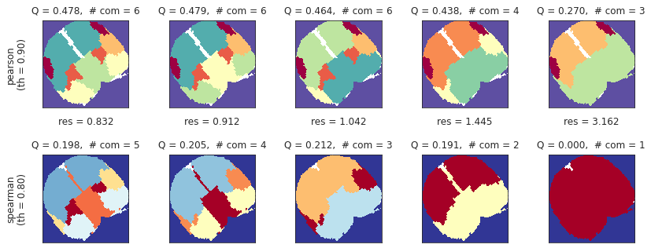

# HIDE CODE
import re
import os
import sys
import collections
import numpy as np
import pandas as pd
import nibabel as nib
from pathlib import Path
from os.path import join as pjoin
from scipy import stats as sp_stats
from tqdm.notebook import tqdm
import matplotlib.pyplot as plt
import seaborn as sns
sns.set_style('whitegrid')
# GitHub
git_path = pjoin(os.environ['HOME'], 'Dropbox/git/Ca-fMRI/')
sys.path.insert(0, git_path)
from simulation.simulation import *
from utils.plotting import *
from utils.processing import *
from model.configuration import Config
def plot_corr_hist(corr_list, labels, colors=None, cmap='tab10', figsize=(12, 8)):
if colors is None:
colors = list(sns.color_palette(cmap, n_colors=len(corr_list)))
sns.set_style('whitegrid')
plt.figure(figsize=figsize)
for item, lbl, color in zip(corr_list, labels, colors):
x = np.triu(item)
x = x.flatten()
sns.histplot(x[x>0.0], kde=True, color=color, alpha=0.25,
line_kws={'lw': 3}, label=lbl)
mean = x[x>0.0].mean()
plt.axvline(mean, color=color, ls='--', lw=1.5, label='{:s} mean: {:.3f}'.format(lbl, mean))
plt.title('Histogram plot of correlations', fontsize=15, y=1.02)
plt.legend(loc='upper left')
plt.show()
return
def filter_islands(partition, atlas, node_labels, min_com_size: int = 3):
coms_ctr = collections.Counter(partition.values())
good_com_idxs = zip(*filter(lambda x: x[1] > min_com_size, coms_ctr.most_common()))
good_com_idxs = sorted(tuple(good_com_idxs)[0])
bad_com_idxs = [item for item in set(partition.values()) if item not in good_com_idxs]
comm_dict = collections.defaultdict(list)
for k, v in partition.items():
comm_dict[v].append(k)
comm_dict = dict(sorted(comm_dict.items()))
comm_mat = np.ones(atlas.shape) * -1
for node, com_idx in partition.items():
region_id = node_labels[node]
if com_idx in good_com_idxs:
comm_mat[atlas == region_id] = good_com_idxs.index(com_idx)
else:
comm_mat[atlas == region_id] = np.nan
output = {
'good_com_idxs': good_com_idxs,
'bad_com_idxs': bad_com_idxs,
'comm_dict': comm_dict,
'comm_mat': comm_mat,
}
return output
def plot_louvain_communities(
pearson: dict,
spearman: dict,
atlas: np.ndarray,
modularities: dict,
selected_idxs: list,
pearson_th: float = 0.8,
spearman_th: float = 0.7,
figsize=(12, 4.5),
colorbar=False, ):
x0, y0 = tuple(zip(*modularities.items()))
best_idx = np.argmax(y0)
best_res = x0[best_idx]
sns.set_style('white')
plot_idxs = sorted(selected_idxs + [best_idx])
fig, axes = plt.subplots(2, len(plot_idxs), figsize=figsize)
for ii, idx in enumerate(plot_idxs):
# pearson
g = nx.from_numpy_matrix(pearson[pearson_th])
coms = cdlib_algorithms.louvain(
g_original=g,
weight='weight',
resolution=x0[idx],
randomize=False,
)
partition = convert('community', 'partition', community=coms.communities)
output = filter_islands(partition, atlas, node_labels, min_com_size=3)
q = nx_comm.modularity(g, communities=coms.communities)
im = axes[0, ii].imshow(output['comm_mat'], cmap='Spectral_r', interpolation='none')
if colorbar:
plt.colorbar(im, ax=axes[0, ii], shrink=0.7)
msg = 'Q = {:.3f}, # com = {:d}'
msg = msg.format(q, len(np.unique(output['comm_mat'][output['comm_mat']>-1])))
axes[0, ii].set_title(msg, y=1.03)
# spearman
g = nx.from_numpy_matrix(spearman[spearman_th])
coms = cdlib_algorithms.louvain(
g_original=g,
weight='weight',
resolution=x0[idx],
randomize=False,
)
partition = convert('community', 'partition', community=coms.communities)
output = filter_islands(partition, atlas, node_labels, min_com_size=3)
q = nx_comm.modularity(g, communities=coms.communities)
im = axes[1, ii].imshow(output['comm_mat'], cmap='RdYlBu_r', interpolation='none')
if colorbar:
plt.colorbar(im, ax=axes[1, ii], shrink=0.7)
msg = 'res = {:.3f}\n\nQ = {:.3f}, # com = {:d}'
msg = msg.format(x0[idx], q, len(np.unique(output['comm_mat'][output['comm_mat']>-1])))
axes[1, ii].set_title(msg, y=1.03)
if ii == 0:
axes[0, ii].set_ylabel('pearson\n(th = {:.2f})\n'.format(pearson_th), fontsize=12)
axes[1, ii].set_ylabel('spearman\n(th = {:.2f})\n'.format(spearman_th), fontsize=12)
for j in range(2):
axes[j, ii].set_xticks([])
axes[j, ii].set_yticks([])
fig.tight_layout()
plt.show()
return
config = Config()
load = load_organized_data(
folder='atlas-64_unfiltered_unnormalized',#'filtered_low-0.001_high-4.000_ord-2_normalized',
config=config,
subject=6,
session=1,
run=1,
)
load.keys()
dict_keys(['ca', 'atlas', 'ref', 'mask', 'atlas_kmeans', 'kmeans_centers', 'file_name'])
x = np.zeros(load['atlas_kmeans'].shape + (list(load['ca'].values())[0].shape[-1],))
for key, data in load['ca'].items():
num_nan = np.isnan(load['ca'][key]).mean().sum()
if num_nan > 0:
print(key, num_nan)
continue
x[load['atlas_kmeans'] == key] = load['ca'][key]
x.shape
(190, 186, 5500)
t = 1800
res = 10
_slice = x[..., t: t + res * 120]
vminmax = np.max(np.abs(_slice))
sns.set_style('white')
nrows, ncols = 12, 10
fig, axes = plt.subplots(nrows, ncols, figsize=(13.5, 15))
for idx in range(_slice.shape[-1] // res):
i, j = idx//ncols, idx%ncols
axes[i, j].imshow(_slice[..., idx * res], vmin=-vminmax, vmax=vminmax, cmap='bwr', interpolation='none')
axes[i, j].axis('off')
fig.tight_layout()
plt.show()
df = pd.DataFrame.from_dict(load['ca'])
node_labels = df.columns.values.tolist()
node_labels = {i: lbl for i, lbl in enumerate(node_labels)}
df.describe()
| 1 | 2 | 3 | 4 | 5 | 6 | 7 | 8 | 9 | 10 | ... | 55 | 56 | 57 | 58 | 59 | 60 | 61 | 62 | 63 | 64 | |
|---|---|---|---|---|---|---|---|---|---|---|---|---|---|---|---|---|---|---|---|---|---|
| count | 5500.000000 | 5500.000000 | 5500.000000 | 5500.000000 | 5500.000000 | 5500.000000 | 5500.000000 | 5500.000000 | 5500.000000 | 5500.000000 | ... | 5500.000000 | 5500.000000 | 5500.000000 | 5500.000000 | 5500.000000 | 5500.000000 | 5500.000000 | 5500.000000 | 5500.000000 | 5500.000000 |
| mean | 8.220594 | 10.124248 | 15.034250 | 6.969628 | 17.044105 | 13.357854 | 6.497459 | 11.090709 | 21.173194 | 18.259820 | ... | 22.123233 | 26.128471 | 10.736159 | 19.513757 | 14.947451 | 17.820791 | 9.485063 | 15.261226 | 10.043897 | 12.084008 |
| std | 27.121143 | 31.304852 | 41.860082 | 14.499889 | 60.249522 | 51.822411 | 10.833903 | 42.090334 | 85.319236 | 74.071770 | ... | 117.898445 | 150.389381 | 37.717099 | 107.411174 | 84.717142 | 114.019217 | 35.886435 | 72.255902 | 55.356303 | 42.942090 |
| min | -87.721245 | -107.246559 | -139.770491 | -55.772785 | -189.234563 | -181.506035 | -36.063888 | -153.167702 | -263.981409 | -217.061803 | ... | -345.371132 | -492.320324 | -105.681839 | -322.384564 | -245.113290 | -342.035546 | -108.573831 | -214.676619 | -165.424433 | -120.916012 |
| 25% | -8.693668 | -10.032225 | -12.242748 | -1.227007 | -22.738368 | -19.780471 | 0.048693 | -13.573963 | -34.976604 | -30.898511 | ... | -57.087448 | -65.657050 | -13.143469 | -47.435103 | -42.806067 | -61.331070 | -14.120381 | -33.401682 | -28.309800 | -18.186438 |
| 50% | 11.271709 | 11.817890 | 16.220909 | 8.697181 | 18.045251 | 19.373542 | 6.870322 | 17.220251 | 21.723419 | 18.539010 | ... | 30.721276 | 51.724324 | 11.806106 | 38.524894 | 21.683746 | 34.192762 | 12.206589 | 24.965916 | 15.326576 | 16.770525 |
| 75% | 26.997407 | 31.778222 | 43.051191 | 16.601593 | 57.301942 | 49.693927 | 13.454929 | 40.691540 | 79.851822 | 67.862504 | ... | 104.195360 | 133.212233 | 36.385089 | 94.084055 | 76.854982 | 101.445738 | 35.487019 | 66.716823 | 50.779558 | 43.000844 |
| max | 94.673654 | 109.183853 | 169.818004 | 55.591359 | 215.579242 | 174.726620 | 46.424464 | 147.954006 | 324.269841 | 282.235511 | ... | 461.399580 | 422.765423 | 138.272639 | 365.871480 | 263.197993 | 308.215484 | 115.056476 | 245.470028 | 161.853816 | 144.954251 |
8 rows 64 columns
thresholds = [0.75, 0.8, 0.85, 0.9, 0.95]
corrs = get_corrs(df, thresholds=thresholds)
plt.imshow(corrs['pearson_corr'], cmap='nipy_spectral')
plt.colorbar()
<matplotlib.colorbar.Colorbar at 0x7f21d458a430>

_ = plot_corrs(corrs['pearson'], corrs['spearman'], thresholds)
plot_corr_hist(
corr_list=[corrs['pearson_corr'], corrs['spearman_corr']],
labels=['pearson', 'spearman'],
colors=['C0', 'C3'],
)
graphs = {th: nx.from_numpy_matrix(a) for th, a in corrs['spearman'].items()}
results_louvain = run_louvain(graphs[0.8], res=np.logspace(-1, 1, 1001))
selected_idxs = [460, 480, 580, 750]
plot_louvain_results(results_louvain, selected_idxs=selected_idxs)
plot_louvain_communities(
pearson=corrs['pearson'],
spearman=corrs['spearman'],
atlas=load['atlas'],
modularities=results_louvain['modularities'],
selected_idxs=selected_idxs,
pearson_th=0.9,
spearman_th=0.8,
figsize=(12, 4.5),
colorbar=False, )

Concanenate
data = {}
for run in [1, 3, 5, 7]:
load = load_organized_data(
folder='unfiltered_unnormalized',#'filtered_low-0.001_high-4.000_ord-2_normalized',
config=config,
subject=6,
session=1,
run=run,
)
data[run] = load
plt.figure(figsize=(13.5, 3.7))
plt.subplot(131)
plt.imshow(data[1]['atlas'], cmap='flag_r')
plt.subplot(132)
plt.imshow(data[1]['atlas'] == 222, cmap='flag_r')
plt.subplot(133)
plt.imshow((data[1]['atlas'] != 222) & (load['atlas'] > 0), cmap='flag_r')
plt.show()
for run in [1, 3, 5, 7]:
print(run, len(data[run]['ca']), len(np.unique(data[run]['atlas'])))
1 61 64
3 61 64
5 61 64
7 61 64
for run in [1, 3, 5, 7]:
print(run, set(np.unique(data[run]['atlas'])).difference(set(data[run]['ca'].keys())))
1 {0, 33, 41}
3 {0, 33, 41}
5 {0, 33, 41}
7 {0, 33, 41}
for run in [1, 3, 5, 7]:
x = np.zeros(data[run]['atlas'].shape + (list(data[run]['ca'].values())[0].shape[-1],))
for key, time_series in data[run]['ca'].items():
num_nan = np.isnan(time_series).sum()
if num_nan > 0:
print(key, num_nan)
continue
x[data[run]['atlas'] == key] = data[run]['ca'][key]
t = 1800
res = 10
_slice = x[..., t: t + res * 120]
vminmax = np.max(np.abs(_slice))
sns.set_style('white')
nrows, ncols = 12, 10
fig, axes = plt.subplots(nrows, ncols, figsize=(13.5, 17))
for idx in range(_slice.shape[-1] // res):
i, j = idx//ncols, idx%ncols
axes[i, j].imshow(_slice[..., idx * res], vmin=-vminmax, vmax=vminmax, cmap='bwr', interpolation='none')
axes[i, j].axis('off')
fig.tight_layout()
fig.suptitle('RUN: {:d}'.format(run), fontsize=20, y=1.02)
plt.show()
print('\n\n')

df = pd.DataFrame()
for run, load in data.items():
df = pd.concat([df, pd.DataFrame.from_dict(data[run]['ca'])])
node_labels = df.columns.values.tolist()
node_labels = {i: lbl for i, lbl in enumerate(node_labels)}
df.describe()
| 2 | 3 | 4 | 5 | 6 | 7 | 8 | 9 | 10 | 11 | ... | 525 | 526 | 528 | 530 | 538 | 539 | 540 | 541 | 655 | 656 | |
|---|---|---|---|---|---|---|---|---|---|---|---|---|---|---|---|---|---|---|---|---|---|
| count | 2.200000e+04 | 2.200000e+04 | 2.200000e+04 | 2.200000e+04 | 2.200000e+04 | 2.200000e+04 | 2.200000e+04 | 2.200000e+04 | 2.200000e+04 | 2.200000e+04 | ... | 2.200000e+04 | 2.200000e+04 | 2.200000e+04 | 2.200000e+04 | 2.200000e+04 | 2.200000e+04 | 2.200000e+04 | 2.200000e+04 | 2.200000e+04 | 2.200000e+04 |
| mean | -7.943267e-17 | -1.449355e-16 | -6.362461e-17 | -3.705622e-17 | -1.000008e-16 | 1.240573e-16 | -4.768913e-17 | 1.179006e-16 | -1.479435e-16 | -6.551830e-17 | ... | 1.660288e-16 | 8.529036e-17 | 4.727380e-16 | -4.568050e-16 | 5.796720e-17 | 1.352532e-16 | -8.520489e-17 | 2.967462e-16 | 4.336430e-17 | -1.119054e-17 |
| std | 1.000023e+00 | 1.000023e+00 | 1.000023e+00 | 1.000023e+00 | 1.000023e+00 | 1.000023e+00 | 1.000023e+00 | 1.000023e+00 | 1.000023e+00 | 1.000023e+00 | ... | 1.000023e+00 | 1.000023e+00 | 1.000023e+00 | 1.000023e+00 | 1.000023e+00 | 1.000023e+00 | 1.000023e+00 | 1.000023e+00 | 1.000023e+00 | 1.000023e+00 |
| min | -3.712641e+00 | -4.161112e+00 | -3.404397e+00 | -3.527629e+00 | -3.159035e+00 | -3.753092e+00 | -3.332686e+00 | -3.019642e+00 | -3.482042e+00 | -3.225162e+00 | ... | -3.855143e+00 | -3.363150e+00 | -4.359220e+00 | -3.534192e+00 | -3.697468e+00 | -3.469518e+00 | -3.832680e+00 | -3.742846e+00 | -3.305037e+00 | -3.806465e+00 |
| 25% | -6.618210e-01 | -6.434595e-01 | -6.906074e-01 | -6.893152e-01 | -6.730613e-01 | -6.816163e-01 | -6.774442e-01 | -6.859514e-01 | -6.867057e-01 | -6.950612e-01 | ... | -6.664093e-01 | -6.896908e-01 | -6.182442e-01 | -6.060943e-01 | -5.962133e-01 | -6.138134e-01 | -6.408468e-01 | -6.720892e-01 | -6.356774e-01 | -6.391822e-01 |
| 50% | 4.015162e-03 | -4.526041e-03 | -2.959994e-02 | -2.124880e-02 | -2.964608e-02 | -1.480387e-02 | -2.251929e-02 | -3.895739e-02 | -2.070966e-02 | -2.652678e-02 | ... | -2.609249e-04 | -1.625262e-02 | -4.128218e-02 | -1.788177e-02 | 4.195114e-02 | 4.422220e-02 | 1.425671e-02 | 3.422303e-03 | -3.801255e-03 | -1.570662e-02 |
| 75% | 6.557064e-01 | 6.314881e-01 | 6.478796e-01 | 6.573737e-01 | 6.538920e-01 | 6.584215e-01 | 6.610954e-01 | 6.447057e-01 | 6.634648e-01 | 6.541951e-01 | ... | 6.548101e-01 | 6.586565e-01 | 5.725076e-01 | 5.908924e-01 | 6.449206e-01 | 6.296736e-01 | 6.117628e-01 | 6.694277e-01 | 6.021262e-01 | 6.011782e-01 |
| max | 6.116167e+00 | 6.731212e+00 | 5.037860e+00 | 5.469960e+00 | 6.325484e+00 | 4.446328e+00 | 5.256533e+00 | 5.680413e+00 | 5.595429e+00 | 5.757475e+00 | ... | 5.388754e+00 | 5.832130e+00 | 1.167115e+01 | 5.940249e+00 | 7.401193e+00 | 7.377751e+00 | 9.111155e+00 | 4.861781e+00 | 1.174976e+01 | 9.733645e+00 |
8 rows 61 columns
22000 / 4
5500.0
thresholds = [0.6, 0.75, 0.8, 0.85, 0.9]
corrs = get_corrs(df, thresholds=thresholds)
plt.imshow(corrs['pearson_corr'], cmap='nipy_spectral')
plt.colorbar()
<matplotlib.colorbar.Colorbar at 0x7fe2a5a75490>
plot_corrs(corrs['pearson'], corrs['spearman'], thresholds)
plot_corr_hist(
corr_list=[corrs['pearson_corr'], corrs['spearman_corr']],
labels=['pearson', 'spearman'],
colors=['C0', 'C3'],
)

graphs = {th: nx.from_numpy_matrix(a) for th, a in corrs['spearman'].items()}
results_louvain = run_louvain(graphs[0.85], res=np.logspace(-1, 1, 1001))
selected_idxs = [350, 450, 540, 630]
plot_louvain_results(results_louvain, selected_idxs=selected_idxs)
plot_louvain_communities(
pearson=corrs['pearson'],
spearman=corrs['spearman'],
atlas=load['atlas'],
modularities=results_louvain['modularities'],
selected_idxs=selected_idxs,
pearson_th=0.9,
spearman_th=0.85,
figsize=(12, 4.5),
colorbar=False, )

Network measures
field_names = ('subject', 'session', 'run', 'threshold', 'node_labels', 'adjacency', 'graph', 'cfg')
Data = collections.namedtuple(
typename='Data',
field_names=field_names,
)
config = Config()
thresholds = [0.70, 0.75, 0.80, 0.85, 0.90]
data_all = {}
for subject in tqdm(range(1, config.num_subjects + 1)):
for session in tqdm(range(1, config.num_sessions + 1), leave=False):
for run in range(1, config.num_runs + 1):
load = load_organized_data(
folder='unfiltered_normalized',
config=config,
subject=subject,
session=session,
run=run,
)
if load is None:
continue
df = pd.DataFrame.from_dict(load['ca'])
node_labels = df.columns.values.tolist()
node_labels = {i: lbl for i, lbl in enumerate(node_labels)}
corrs = get_corrs(df, thresholds=thresholds)
key = 'sub-SLC{:02d}'.format(subject)
key += '_ses-{:d}'.format(session)
key += '_run-{:d}'.format(run)
for th in thresholds:
a = corrs['spearman'][th]
g = nx.from_numpy_matrix(a)
data_all['{:s}_th-{:.2f}'.format(key, th)] = Data(
subject=subject,
session=session,
run=run,
threshold=th,
node_labels=node_labels,
adjacency=a,
graph=g,
cfg=mk_config_model(g, weighted=True),
)
Warning! File not found, moving on . . .
['sub-SLC03', 'ses-1', 'run-1', 'organized', 'ca']
Warning! File not found, moving on . . .
['sub-SLC05', 'ses-1', 'run-5', 'organized', 'ca']
Warning! File not found, moving on . . .
['sub-SLC06', 'ses-3', 'run-2', 'organized', 'ca']
Warning! File not found, moving on . . .
['sub-SLC08', 'ses-1', 'run-7', 'organized', 'ca']
Warning! File not found, moving on . . .
['sub-SLC10', 'ses-3', 'run-1', 'organized', 'ca']
# network measures
from networkx.algorithms.cluster import transitivity, average_clustering
from networkx.algorithms.assortativity import degree_pearson_correlation_coefficient
from networkx.algorithms.efficiency_measures import global_efficiency, local_efficiency
from networkx.algorithms.approximation.clique import large_clique_size
from networkx.algorithms.shortest_paths.generic import average_shortest_path_length
measures_df = pd.DataFrame()
dict_list = []
for k, data in tqdm(data_all.items()):
# nodes, degrees = list(zip(*g.degree()))
num_nodes = len(data.node_labels)
# the real graph
_avg_clustering = average_clustering(data.graph, weight='weight')
_local_efficiency = local_efficiency(data.graph)
_large_clique_ratio = large_clique_size(data.graph) / num_nodes
try:
_avg_shortest_path_len = average_shortest_path_length(data.graph, weight='weight')
except:
_avg_shortest_path_len = np.nan
_global_efficiency = global_efficiency(data.graph)
_degree_corr_coef = degree_pearson_correlation_coefficient(data.graph, weight='weight')
data_dict = {
'tag': ['real'] * 6,
'subject': [data.subject] * 6,
'session': [data.session] * 6,
'run': [data.run] * 6,
'threshold': [data.threshold] * 6,
'num_regions': [num_nodes] * 6,
'lbl': [
'avg_clustering',
'local_efficiency',
'large_clique_ratio',
'avg_shortest_path_len',
'global_efficiency',
'degree_corr_coef', # assortativity
],
'val': [
_avg_clustering,
_local_efficiency,
_large_clique_ratio,
_avg_shortest_path_len,
_global_efficiency,
_degree_corr_coef,
],
}
dict_list.append(data_dict)
# configuration model
_avg_clustering = average_clustering(data.cfg, weight='weight')
_local_efficiency = local_efficiency(data.cfg)
_large_clique_ratio = large_clique_size(data.cfg) / num_nodes
try:
_avg_shortest_path_len = average_shortest_path_length(data.cfg, weight='weight')
except:
_avg_shortest_path_len = np.nan
_global_efficiency = global_efficiency(data.cfg)
_degree_corr_coef = degree_pearson_correlation_coefficient(data.cfg, weight='weight')
data_dict = {
'tag': ['cfg'] * 6,
'subject': [data.subject] * 6,
'session': [data.session] * 6,
'run': [data.run] * 6,
'threshold': [data.threshold] * 6,
'num_regions': [num_nodes] * 6,
'lbl': [
'avg_clustering',
'local_efficiency',
'large_clique_ratio',
'avg_shortest_path_len',
'global_efficiency',
'degree_corr_coef', # assortativity
],
'val': [
_avg_clustering,
_local_efficiency,
_large_clique_ratio,
_avg_shortest_path_len,
_global_efficiency,
_degree_corr_coef,
],
}
dict_list.append(data_dict)
measures_df = pd.DataFrame.from_dict(merge_dicts(dict_list))
measures_df
| tag | subject | session | run | threshold | num_regions | lbl | val | |
|---|---|---|---|---|---|---|---|---|
| 0 | real | 1 | 1 | 1 | 0.7 | 66 | avg_clustering | 0.609992 |
| 1 | real | 1 | 1 | 1 | 0.7 | 66 | local_efficiency | 0.839339 |
| 2 | real | 1 | 1 | 1 | 0.7 | 66 | large_clique_ratio | 0.378788 |
| 3 | real | 1 | 1 | 1 | 0.7 | 66 | avg_shortest_path_len | NaN |
| 4 | real | 1 | 1 | 1 | 0.7 | 66 | global_efficiency | 0.699184 |
| ... | ... | ... | ... | ... | ... | ... | ... | ... |
| 12295 | cfg | 10 | 3 | 7 | 0.9 | 62 | local_efficiency | 0.066340 |
| 12296 | cfg | 10 | 3 | 7 | 0.9 | 62 | large_clique_ratio | 0.048387 |
| 12297 | cfg | 10 | 3 | 7 | 0.9 | 62 | avg_shortest_path_len | NaN |
| 12298 | cfg | 10 | 3 | 7 | 0.9 | 62 | global_efficiency | 0.207673 |
| 12299 | cfg | 10 | 3 | 7 | 0.9 | 62 | degree_corr_coef | 0.011740 |
12300 rows 8 columns
_ths = measures_df.threshold.unique().tolist()
_lbls = measures_df.lbl.unique().tolist()
sns.set_style('whitegrid')
fig, axes = plt.subplots(nrows=len(_ths), ncols=len(_lbls), figsize=(15, 8), sharey='col', sharex='all')
for i, th in enumerate(_ths):
for j, lbl in enumerate(_lbls):
selected_df = measures_df.loc[(measures_df.threshold == th) & (measures_df.lbl == lbl)]
sns.boxplot(data=selected_df, y='val', x='tag', hue='tag', ax=axes[i, j])
axes[i, j].legend().set_visible(False)
axes[i, j].set_xlabel('')
if i == 0:
axes[i, j].set_title('{:s}\n'.format(lbl), fontsize=10)
if j == 0:
axes[i, j].set_ylabel('thres: {:.2f}\n'.format(th), fontsize=10)
else:
axes[i, j].set_ylabel('')
fig.savefig('net_measures.pdf', dpi=200)
fig.tight_layout()
plt.show()

# TODO: make this general
def plot_louvain_communities(
graphs: list,
# pearson: dict,
# spearman: dict,
atlas: np.ndarray,
# modularities: dict,
# selected_idxs: list,
# pearson_th: float = 0.7,
# spearman_th: float = 0.8,
figsize=(12, 4.5),
colorbar=False, ):
# x0, y0 = tuple(zip(*modularities.items()))
# best_idx = np.argmax(y0)
# max_mod = y0[best_idx]
sns.set_style('white')
plot_idxs = sorted(selected_idxs + [best_idx])
fig, axes = plt.subplots(2, len(plot_idxs), figsize=figsize)
for ii, idx in enumerate(plot_idxs):
# g = nx.from_numpy_matrix(spearman[spearman_th])
coms = cdlib_algorithms.louvain(
g_original=g,
weight='weight',
resolution=best_idx[idx],
randomize=False,
)
partition = convert('community', 'partition', community=coms.communities)
output = filter_islands(partition, atlas, node_labels, min_com_size=3)
# comm_mat, comm_dict = filter_islands(partition, labels, scale=size, min_com_size=5)
q = nx_comm.modularity(g, communities=coms.communities)
im = axes[0, ii].imshow(output['comm_mat'], cmap='RdYlBu_r', interpolation='none')
if colorbar:
plt.colorbar(im, ax=axes[0, ii], shrink=0.7)
msg = 'res = {:.3f}\n\nQ = {:.3f}, # com = {:d}'
msg = msg.format(x0[idx], q, len(np.unique(comm_mat[comm_mat>-1])))
axes[0, ii].set_title(msg, y=1.03)
g = nx.from_numpy_matrix(pearson[0.8])
partition = community_louvain.best_partition(g, resolution=x0[idx], random_state=42)
comm_mat, comm_dict = filter_islands(partition, labels, scale=size, min_com_size=5)
q = nx_comm.modularity(g, communities=comm_dict.values())
im = axes[1, ii].imshow(comm_mat, cmap='Spectral_r', interpolation='none')
if colorbar:
plt.colorbar(im, ax=axes[1, ii], shrink=0.7)
msg = 'Q = {:.3f}, # com = {:d}'
msg = msg.format(q, len(np.unique(comm_mat[comm_mat>-1])))
axes[1, ii].set_title(msg, y=1.03)
if ii == 0:
axes[0, ii].set_ylabel('spearman\n(th = {:.2f})\n'.format(spearman_th), fontsize=12)
axes[1, ii].set_ylabel('pearson\n(th = {:.2f})\n'.format(pearson_th), fontsize=12)
for j in range(2):
axes[j, ii].set_xticks([])
axes[j, ii].set_yticks([])
fig.tight_layout()
plt.show()
return